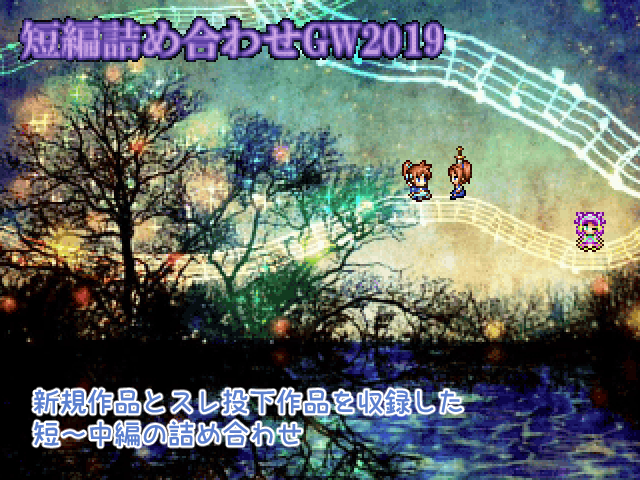

| No.01 短編詰め合わせGW2019 | |
 | |
| 【作者名】雨水梨 | |
| 【使用ツール】2000 | |
| 【ジャンル】見るゲとksgと時々デフォ戦 | |
| 【配信/投稿】両方可 | |
| 【作者コメント】 GW祭2017に続き、2回目の短編集。 新作＋スレ投下作品の再収録となっています。 条件を満たすとおまけ部屋に行けます。 【新規作品】(3作品) 「彷徨う聖剣」 「XP以降のキャラだらけの魔王把握」※リクエスト作品 「もしも最後の表情しか使えなかったら」(Ver2で追加) 【スレ投下作品】(15作品) 「ドラゴナスのハロウィン大作戦！」 「もしもカラスの鳴き声が」 「出したことないキャラで魔王把握」 「ヒツルギと七夕」 「この夏絶対に売れるかき氷」 「いにしえに刻まれたその名は」 「フォンダンショクソコラ」 「ダークエンジェル訪問」 「ほしゅシーン2」 「アシュリーの里帰り」 「ニナの日ksg」 「サウンドバリア活用法」 「桃の節句(複数形)」 「ある日常 ～リナックス編～」 「フィールド4だけで魔王把握」(Ver2で追加) 【おまけ】(Ver2で追加) ・「出したことないキャラで魔王把握」のおまけ部屋 ・NGシーン集 ・サウンドルーム ・一部キャラクターや世界観のはい設 ・エンディング＋？？？ | |
| 【管理人コメント】 パ↑ークの危↑機なのだー！ | |
| ダウンロード(23.1MB)/感想掲示板 | |
| 前の作品/次の作品 | |